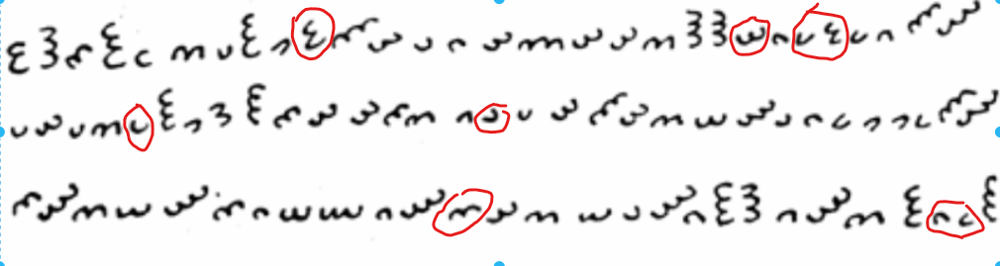

[05] · INVESTIGATION
My transcription
87 glyphs read by hand, nine ambiguities flagged, and a validation against a published reading.
Nobody reads Elgar's paper any more — everyone reads the 1937 halftone. So the first thing I did was transcribe it myself, glyph by glyph, and mark every glyph I could not decide instead of quietly guessing.
How I did it
I laid the note out in draw.io, one row per written line, and wrote each glyph as arcs +
direction — 1 to 3 arcs, opening towards one of
n ne e se s sw w nw.
Where two readings were possible I wrote both, as (2ne/e). Next to the rows I kept the questions that
would decide how to read it:
SIDE OPEN / SIDE CLOSED
Does a glyph's direction name the side where the cup is open, or the closed side it bulges towards? (“DIR OPEN / DIR CLOSED” in the diagram.)
LINE BY LINE OR COMPLETE?
Are the three rows three units, or one continuous string that just wrapped at the edge of the sheet?
REVERSED? LBL / CP
Could it have been written back to front — line by line (LBL) or complete (CP)?
LETTERS: 29 / 31 / 27
The row lengths, counted and fixed, so every tool could check its input against them.
All four questions got answers later, and they are on this page: the first turned out not to matter, the second and third are searched both ways, and the fourth became a hard assertion in the lab's transcription module.

The raw transcription, as first written
2e - 3w - 2se - 3e - 1e - 2s - 1n - 3e - 1sw - (2ne/e) - 3se - 2nw - 1nw - 1se - 2nw - 3s - 2nw - 2nw - 2s - 3w - 3w - (2n/nw) - 1se - (1n/ne) - (2ne/e) - 1ne - 1s - 3se - 2nw 1n - 2nw - 1n - 2s - (1n/ne) - 3e - 1sw - 2sw - 3e - 2se - 2nw - 2nw - 2se - 2s - 1s - (1nw/w) - 1n - 2nw - 3se - 2nw - 2s - 2n - 3nw - 1nw - 1se - 1ne - 1se - 1se - 1ne - 3se - 3nw 2se - 3nw - 2s - 2n - 3nw - 2se - 1se - 2n - 3n - 1s - 3nw - (2se/s) - 2nw - 2s - 2n - 1nw - 3nw - 1s - 3e - 3w - 1s - 3nw - 2s - 3e - (1s/se) - (1e/ne) - 3e
All nine are the same kind of doubt: the arc count is never in question, only the direction, and always by exactly one 45° step.
The nine ambiguous glyphs
| # | line · position | could be | resolved to |
|---|---|---|---|
| 10 | line 1 · 10 | 2ne / 2e | 2ne |
| 22 | line 1 · 22 | 2n / 2nw | 2n |
| 24 | line 1 · 24 | 1n / 1ne | 1ne |
| 25 | line 1 · 25 | 2ne / 2e | 2ne |
| 34 | line 2 · 5 | 1n / 1ne | 1ne |
| 45 | line 2 · 16 | 1nw / 1w | 1nw |
| 72 | line 3 · 12 | 2se / 2s | 2se |
| 85 | line 3 · 25 | 1s / 1se | 1s |
| 86 | line 3 · 26 | 1e / 1ne | 1ne |
Nine binary choices give 2⁹ = 512 possible readings. lab/repair.py scored all 512
against the published reading and kept the one with the most agreement and no letter collisions.
Validation — is the transcription sound?
If my transcription is right and the published reading ([01]) is a true 1:1
substitution, every distinct glyph must map to exactly one letter. lab/align.py checks exactly that:
line lengthsmatch29 / 31 / 27 both
agreement82/8794.3%
collisions0letters claimed twice
null mean28.7shuffled plaintext
p-value<5×10⁻⁵0 of 20,000 shuffles
The null keeps the published letters but shuffles their order (lab/signif.py, 20,000 shuffles); a
random alignment averages 28.7 of 87 and none of the 20,000 reached 82. The transcription is sound.
Below, computed live: the resolved reading pushed through the key the published reading implies. Red letters are the five disagreements.
Three readings
| reading | what it is | use it for |
|---|---|---|
| primary | The raw first pass: every flagged glyph takes its first option. | seeing what the undecided glyphs do |
| resolved | The nine ambiguities settled for best 1:1 fit — 82/87, zero collisions. | everything — the default |
| corrected | Resolved plus five further re-reads (#13, #29, #56, #57, #78) inferred from the published solution. | nothing that tests that solution — it is circular |
Which way does a glyph point? — it does not matter
My first question in the diagram — is a glyph named by its open side or its closed side? — felt fundamental. It is not. A semicircular arc has two features that could carry its direction name: the apex (the tip of the cup) or the opening (the gap). The manuscript never says which, transcribers legitimately differ, and some anchor a quarter-turn off either one.
But every convention is a global relabelling of the 24 names. A substitution solver absorbs any global
relabelling, orientation χ² only permutes its bins, and mirrored pairs are defined by a difference mod 8 that
rotation and reflection both preserve. All 16 offset × mirror combinations give bit-identical statistics
— core.test.js asserts it. The convention's real job is letting you hold the drawn legend against the
manuscript and confirm you transcribed the glyphs you meant.
For the record, my transcription names each glyph by its open side: the ε that opens east is
2e, the “3” that opens west is 3w, the m that opens downwards is 2s
— the same naming benzedrine.ch uses. The glyphs on this site are drawn that way, which in the renderer below is
the pointed +90° setting (its angles are measured from screen-right); my toolkit pages keep their own
default. Try the others: the strip below turns, the statistics do not.
Three rows, or one string?
The note is written 29 / 31 / 27. Line breaks on a sheet of paper are usually just where the writer ran out of room. If they are structural they carry information; if not, anything that treats them as meaningful — per-line key schedules, boustrophedon, reading by columns — imposes structure that was never there.
test
Do the breaks look like joins?
The two glyph pairs that straddle the breaks are 2nw→1n and 3nw→2se. Both
recur elsewhere in the text — twice and three times — so the message runs across the breaks using
ordinary pairs, as continuous prose does. Against random arrangements that commonness has p = 0.023.
Read the direction carefully: a high score means the boundary pairs are unusually common, which points towards one continuous text, not towards meaningful breaks. (An earlier version of my script printed the opposite conclusion from the same number — the number was right, the wording backwards.) And the statistic rests on two pairs, so I do not lean on it in either direction.
shape
Unequal rows look hand-wrapped
29 / 31 / 27 are unequal, which is what hand-written wrapping looks like; a deliberate division would more likely be regular. And although 87 = 3 × 29 exactly, a 3 × 29 grid does not match the written layout — rows two and three would have to start two glyphs earlier and two later than they do.
cover
So search both — and prove it
The two readings are genuinely different ciphers wherever the mechanism uses the rows: with a key that spins by
position, and with the schedule that advances at each line break. lab/rowcheck.py builds every stream
the one-string reading can produce (2,460) and every stream the three-row enumeration produces
(9,835), and finds zero one-string streams the engine cannot reach.
| reading order | three rows vs one string |
|---|---|
| ident, revall | identical, except under sched=line |
| revlines, boustro, l321, cols, spiral | different under every schedule, static included |
In my experiments page the default is one continuous string; row-based operations are still offered, but marked as assuming a structure the evidence does not support.